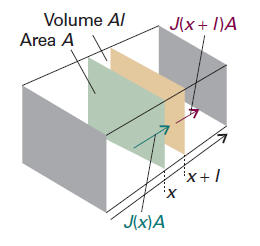
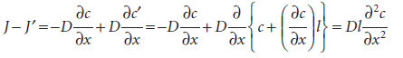
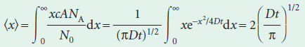
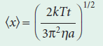
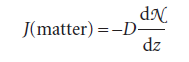
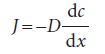
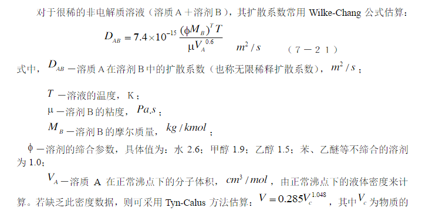
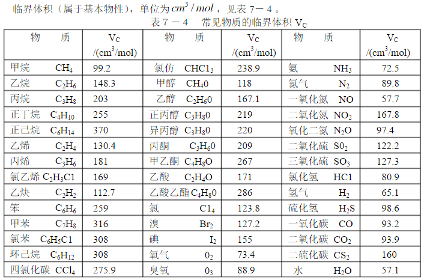

The equation for the rate of change of the concentration of particles in an inhomogeneous region, diffusion equation, also called ‘Fick’s second law of diffusion’, which relates the rate of change of concentration at a point to the spatial variation of the concentration at that point:$$\frac{\partial c}{\partial t}=D\frac{\partial ^{2}c}{\partial x^{2}}$$
Consider a thin slab of cross-sectional area A that extends from x to x + l.
Let the concentration at x be c at the time t. The amount (number of moles) of particles that enter the slab in the infinitesimal interval dt is JAdt, so the rate of increase in molar concentration inside the slab (which has volume Al) on account of the flux from the left is $$\frac{\partial c}{\partial t}=\frac{JA\mathrm{d}t}{Al\mathrm{d}t}=\frac{J}{l}$$
There is also an outflow through the right-hand window. The flux through that window is J′, and the rate of change of concentration that results is$$\frac{\partial c}{\partial t}=-\frac{J'A\mathrm{d}t}{Al\mathrm{d}t}=-\frac{J'}{l}$$
The net rate of change of concentration is therefore$$\frac{\partial c}{\partial t}=\frac{J-J'}{l}$$
Each flux is proportional to the concentration gradient at the window. So, by using Fick’s first law, we can write
We can calculate the net distance travelled on average by particles in a time t if they have a diffusion constant D. We calculate the probability that a particle will be found at a certain distance from the origin, and then calculate the average by weighting each distance by that probability.
The number of particles in a slab of thickness dx and area A at x, where the molar concentration is c, is cANAdx. The probability that any of the N0 = n0NA particles is in the slab is therefore cANAdx/N0. If the particle is in the slab, it has travelled a distance x from the origin. Therefore, the mean distance travelled by all the particles is the sum of each x weighted by the probability of its occurrence:
The average distance of diffusion varies as the square root of the lapsed time. If we use the Stokes–Einstein relation for the diffusion coefficient, the mean distance travelled by particles of radius a in a solvent of viscosity η is
The viscosity of water is 0.891 cP (or 8.91 × 10−4 kg m−1 s−1)
The picture shows the flux of particles down a concentration gradient. Fick’s first law states that the flux of matter (the number of particles passing through an imaginary window in a given interval divided by the area of the window and the duration of the interval) is proportional to the density gradient at that point.
If we divide both sides of this equation by Avogadro’s constant, thereby converting numbers into amounts (numbers of moles), then Fick’s law becomes
In this expression, D is the diffusion coefficient and dc/dx is the slope of the molar concentration.We can obtain the diffusion coefficient by experiment methods. However, considering we have no time left, this job needs to be done immediately in a theoretical way
 简单翻译一下：
NO在水中扩散的建模可以用扩散方程完成，其中需要的参数只有扩散常数，这个可以由实验或者计算得到，计算用的是一篇文章里面的公式，以及这个公式右侧分子中T应当换成0.5